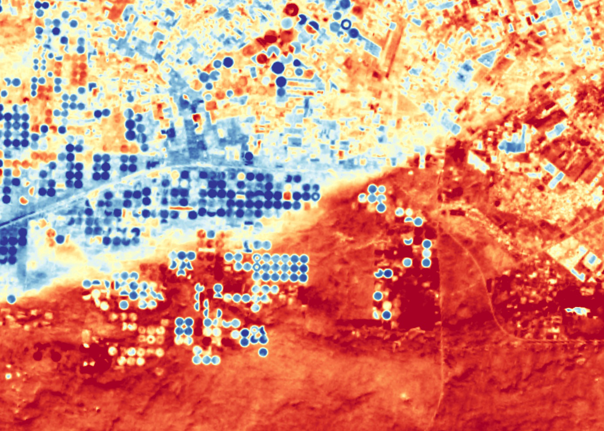

Since the first launch of the Landsat 1, first known as the Earth Resources Technology Satellite (ERTS), on July 23, 1972, the Landsat program has been collecting data on Earth's land surfaces, oceans, and coastal areas for more than 50 years. The Landsat program is a joint effort between NASA and the United States Geological Survey (USGS) that aims to provide continuous records of the Earth's land surface changes through satellite observations. Landsat 9, launched on September 27, 2021, has continued the legacy of monitoring land cover changes, tracking changes in the ecosystem, and providing images for emergency responses and disaster relief efforts.
Animation of the timeline of the Landsat program, from Landsat 1, which launched in 1972, through Landsat 9. The hashed lines for Landsats 8-9 indicate the uncertain lifespan of the satellites. Landsat 7 was officially decommissioned June 4, 2025. Landsat 6 failed to reach orbit on launch. https://svs.gsfc.nasa.gov/11433/#media_group_342166
Carrying on the record of its predecessors, the Landsat 9 offers scientists consistent data on Earth's changing environment. Such data is necessary to make comparisons between past observations and current observations to construct an integrated picture of the long-term environmental changes on Earth. The satellite provides precise imaging and robust data that enables efforts in ecological conservation, urban planning, and disaster prevention. The rising rates of global land cover and land use have had consequences on weather and climate change, human health, and society. Landsat 9's mission is built around a better imaging system that expands the ability to observe subtle surface changes with more accurate measurements of soil wetness, vegetation stress, and other changes on Earth. Besides the technological innovations, Landsat 9 is also intended to work alongside its predecessors to increase the coverage of Earth's observations and combine the data for a more comprehensive dataset for scientists.
Circular irrigated farm fields near Alexandria, Egypt, appear in blue in this image captured by the new Thermal Infrared Sensor 2 aboard Landsat 9- TIRS-2 measures surface temperature, so the cool irrigated fields stand out against the warmer arid lands. Image credit: NASA/USGS Landsat
The image taken by Landsat 9 of Alexandria's irrigated fields provides a clear visual cue of water consumption in the arid region. The vibrant blue color of the field, representing the coldness, directly maps active irrigation fields. Water in the soil results in cooler temperatures over irrigated, healthy crops, which can be detected by the new improved thermal sensor, TIRS-2. Warmer areas in the blue fields can be signs of issues with irrigation systems, system malfunctions, or uneven water distribution. The temperature information provided by Landsat 9 can be helpful in planning irrigation schedules since it allows farmers to identify areas that need irrigation, prioritize water allocation, and detect areas that can be over-irrigated or under-irrigated. The image shows the potential of the Landsat 9 in accurate temperature measurements that can be used for more reliable data for scientists and farm planners. The improvement from previous satellites allows scientists to observe global trends in land use, water availability, and the impacts of climate change.
Themal image of Iceber A-83 breaking away Brunt Ice Shelf on May 20(left) and May 22(right)